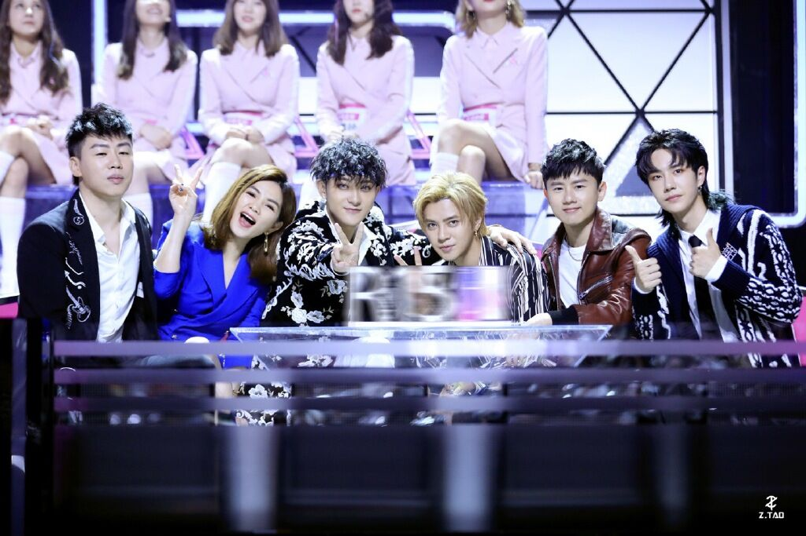
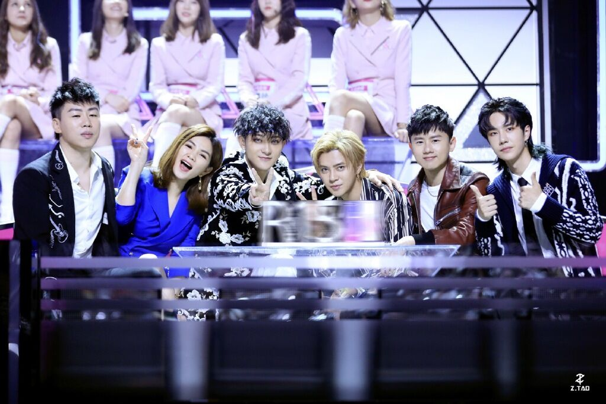

中文名：创造101
外文名：produce 101、창조 101
别名：中国版produce 101
国家/地区：中国内地
类型：青春，成长
播放时间：2018-4-21，每周六：20:00开播
在国内女团长期低迷的状态下，腾讯视频率先关注其发展，立志发掘并打造互联网文化中的女团新势力，让观众近距离了解女团的成长
《创造101》从赛制、模式和节目理念上，都遵循了互联网时代下的青年文化和偶像定义，打破以往选秀节目的传统，将更多选择机会留给观众，以开创“中国顶尖女团”为理念，提供最宽阔开放的舞台，让国内女团以此为契机得到更长远的发展
该节目召集了101位偶像女团练习生，通过任务、训练、考核，让选手在明星导师训练下成长，循环人气投票、暂时淘汰的流程，最终通过人气投票选出11位女练习生，组成偶像团体出道
明星导师训练下成长，最终选出11位选手，组成偶像团体出道。 该节目于2018年4月21日起每周六20:00在腾讯视频独家播出，于
2018年6月23日收官。2019年1月12日，该综艺在第三届金骨朵网络影视盛典中获得年度影响力网络综艺奖。s孟美岐、吴宣仪、杨超越、段奥娟、Yamy、赖美云、张紫宁、杨芸晴、李紫婷、傅菁、徐梦洁十一位成员组成火箭少女101正式出道。
2020.tangyingming